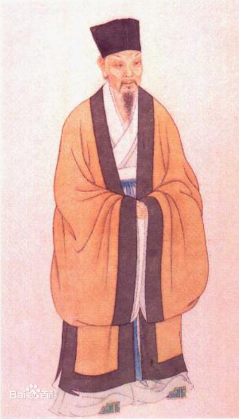

苏轼
苏轼（1037年1月8日—1101年8月24日），字子瞻，一字和仲，号铁冠道人、东坡居士，世称苏东坡 [95-96] 、苏仙 [1-3] 、坡仙 [89] ，汉族，眉州眉山（今四川省眉山市）人，祖籍河北栾城，北宋文学家、书法家、美食家、画家，历史治水名人。 [4-7] [97]
嘉祐二年（1057年），苏轼参加殿试中乙科 [26-27] [92] ，赐进士及第 [10] [60] ，一说赐进士出身 [93] 。嘉祐六年（1061年），应中制科入第三等，授大理评事、签书凤翔府判官 [96] 。宋神宗时曾在杭州、密州、徐州、湖州等地任职。元丰三年（1080年），因“乌台诗案”被贬为黄州团练副使。宋哲宗即位后任翰林学士、侍读学士、礼部尚书等职，并出知杭州、颍州、扬州、定州等地，晚年因新党执政被贬惠州、儋州。宋徽宗时获大赦北还，途中于常州病逝。宋高宗时追赠太师；宋孝宗时追谥“文忠”。 [5] [8]
苏轼是北宋中期文坛领袖，在诗、词、文、书、画等方面取得很高成就。诗题材广阔，清新豪健，善用夸张比喻，独具风格，与黄庭坚并称“苏黄”；词开豪放一派，与辛弃疾同是豪放派代表，并称“苏辛” [5] ；散文著述宏富，纵横恣肆，豪放自如，与欧阳修并称“欧苏”，为“唐宋八大家”之一；善书法，为“宋四家”之一；擅长文人画，尤擅墨竹、怪石、枯木等。
作品有《东坡七集》《东坡易传》《东坡乐府》《潇湘竹石图》《枯木怪石图》等。 [96]
